Just before right now I was standing outside the door to the room of the studio. The 6th floor open studio has been transformed from a common, unknown space to one of development, shenanigans and overall design tomfoolery.

this photo is sourced from unsplash
taken by Nikhil Mitra
this photo is sourced from unsplash
taken by Alexandre St-Louis
Within these 4 walls lie a variety of emotions; an array of states, from general silliness to the development of critical design approaches and the expanse of the mind and the synapses within those links.
I generally tend to associate studios with positive emotions and often look forward to classes and lessons. Come years later down the line room 648 will be just a speck of memory within the synapses in my mind.
this photo is sourced from my phone. Taken a day before the due date of me working on the 6th floor about to fall asleep in the morning.
Caesar, Daniel. Freudian. Golden Child Recordings, 2017.

this photo is sourced from my phone. Taken on the OCADu 100 McCaul Street building 6th floor.
THE SIXThe open studio is a sort of purgatory. A space for both making, concentration, as well as stupid shit. Acting as a bridge; an intermediary link between my home in Toronto and the Studio itself.
I often find myself spending the most time on the 6th floor. It is certainly a curious thing to think about as I type this reflection upon a random lecture hall in a random building within the UofT campus during reading week. Why don’t I seek more unique spaces for work? Why don’t I work at a coffee shop? Why don’t I work at a library? Why don’t I literally seek anywhere else for work or study? Is it due to the collective and community-like nature of common designers alike? I don’t know, but I know that this place will become pivotal to the way I evolve as both a person and a designer.
this photo is sourced from my phone. Taken on the OCADu 100 McCaul Street building 6th floor.

look at this silly guy
The Weeknd. Beauty Behind the Madness. XO and Republic Records, 2015.
this photo is sourced from my phone. Taken in the elevator in my apartment complex.

this photo is sourced from my phone. Taken in the elevator in my apartment complex when I had to make another trip carrying random shit.
HOMEWhether it is 4pm or 2am, whenever I come home it is usually the same tasks. I take off my shoes, hang up my keys on the door handle, lock the door, hang up my jacket, throw my outerwear into the laundry, chug on a nice glass of water, and plop my ass down on the chair at my desk.
this photo is sourced from my phone. Taken from the view inside my room when the sunset was pretty.
this photo is sourced from my phone. Taken near my desk for whatever reason a short while after I moved in.
This is usually how it goes; an average graphic designer, living in Toronto.
Caesar, Daniel. "Ocho Rios." Never Enough, Republic Records, 2023. Spotify.
You guys probably know enough about this city. Me? I personally think its pretty decent aside from the outrageous living expenses. I wasn't really in the mood to write about Toronto since I'm fully still living through my Toronto experience, so I might get back to it in the future.
Here are some cool photos.

this photo is sourced from unsplash
taken by Caio Silva

this photo is sourced from unsplash
taken by Caio Silva
Right before this would be the housing marketing hell.
PARTYNEXTDOOR. PARTYNEXTDOOR. OVO Sound, 2013.

this photo is sourced from unsplash
taken by Marco Tjokro
I was raised here, practically. Came here from the homeland in the middle of Grade 1. Overall I would rate this city a pretty stellar 7/10 probably, maybe pushing 8, maybe even 9 on a good day. (Although it rains a lot.)
this photo is sourced from unsplash
taken by Kyle Thacker
Not sure why my parents chose Vancouver to immigrate to and not Toronto or Edmonton or any other Canadian city. Although I’m quite thankful too since I don’t think I’m cut out for -30 degree winters in Edmonton.
this photo is sourced from my phone. Taken at my friends birthday party.
this photo is sourced from my phone. Taken in the back of my mums car.
this photo is sourced from my phone. Taken in some park or something.
I was mainly confined to a city below vancouver although we’ll talk on that more so later. So I actually don’t have a lot of knowledge about the city/downtown/Metro Vancouver area as a whole. It sure is pretty though.

this photo is sourced from my mum's phone. Taken somewhere amongst the many hiking trails in Vancouver.
JUNNY. Blanc. Mauve Company, under license to Kakao Entertainment, 2022.
I went to school quite a bits away from my house for a majority of my life. Starting from Grade 4 a 7:30 AM commute to school that started at 8:10AM everyday quickly became a common occurrence. I still remember the first time I went on this commute and holy shit it felt twice as long then it does now. I wonder if you really psychologically become used to a commute and time passes quicker the more you take said commute. Anyhow, this was a pretty random core memory of mine.
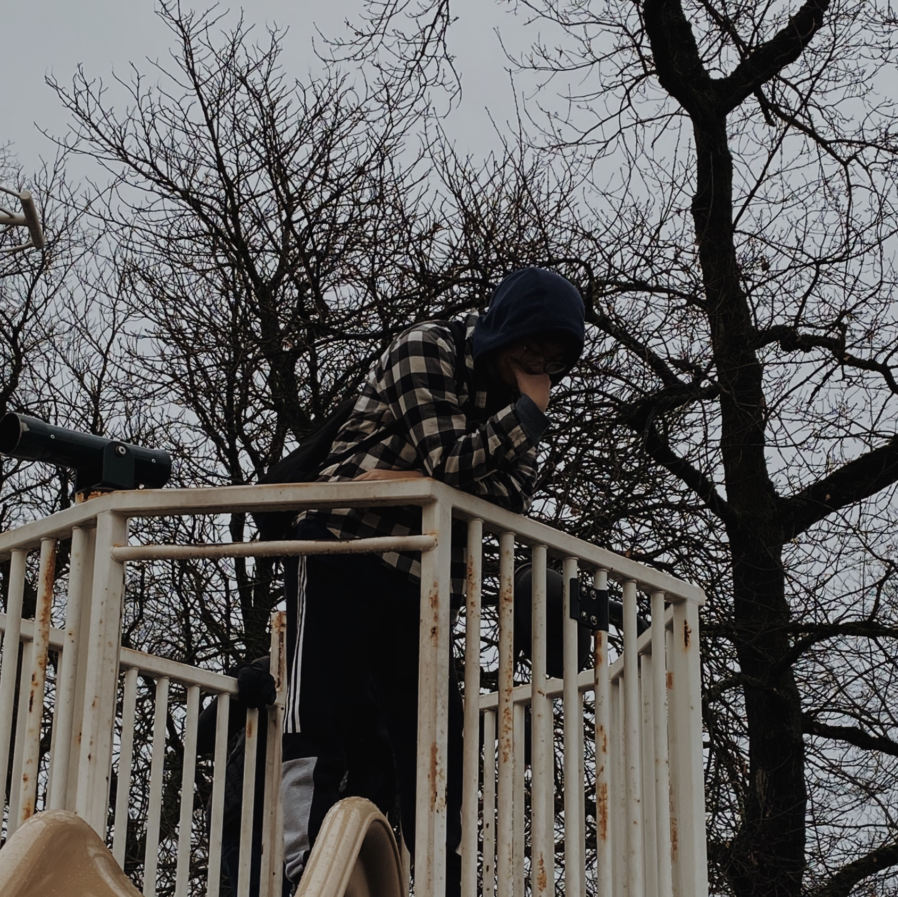this photo is sourced from my friend's phone. Taken at some random park.
Delta was where my highschool was located, and unlike the glorious king city that I actually resided in, full offensive, I mean it, this city was dead as hell. Delta was literally filled with 80% just 60+ retirees. The most exciting activity was either visiting an exceeding average mall or going to play golf. Neither of which, I’m afraid, I was rather fond of at the time. It didn’t even have a T&T and my friend’s parents would commonly commute to another city just to get goods. No costco either, I’m telling you I would not like to live here. A common running joke was that one of god’s greatest punishments would be to confine someone for life to this city.
Besides the city being shit, my high school, and middle school, and half of my elementary for that matter ( yes it was a co-ed K-12 private school ) was rather an enjoyable experience. Much like many other youths I would presume, the Kindergarten to Grade 6 experience was mostly smooth sailing until they start hitting you with the FSA (?) at Grade 7 then the shit picks up. Pretty much the same story here.
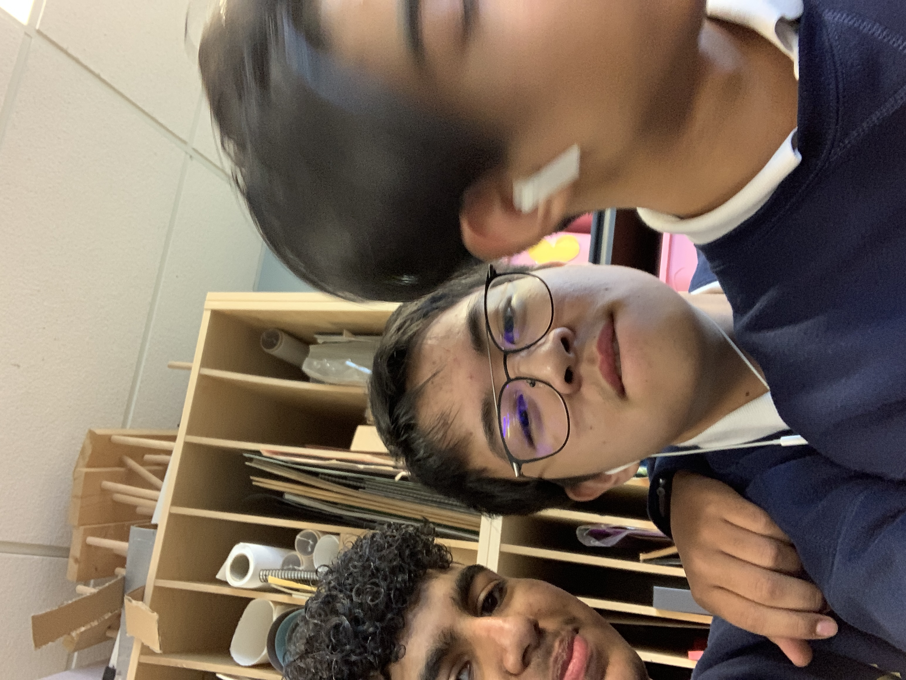this photo is sourced from my phone. Taken in publishing class.
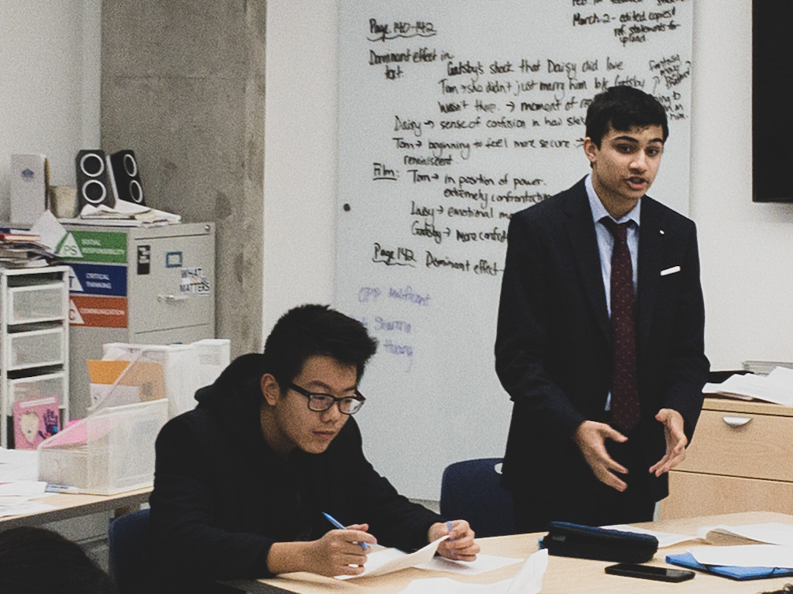this photo is sourced from publishing class' DSLR. Taken in my friend's debate tourney where they got steamrolled.
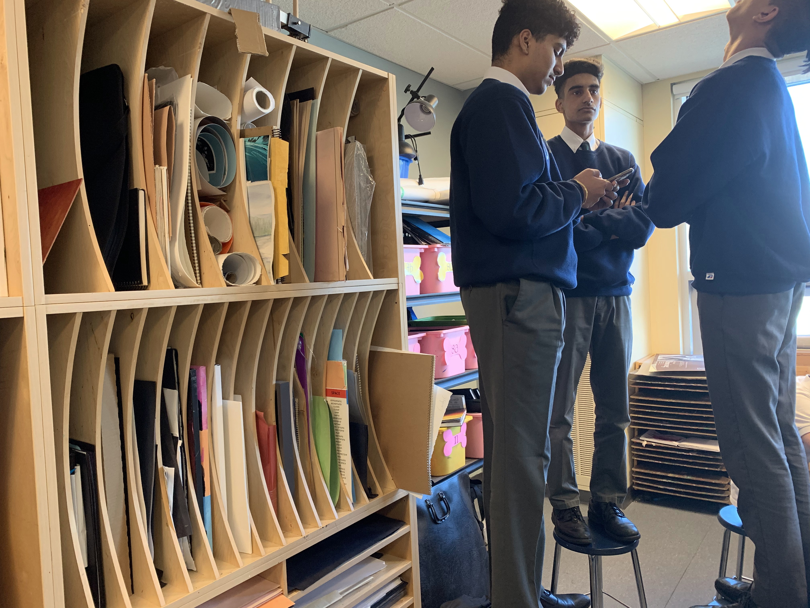this photo is sourced from my phone. Taken in publishing class. (we are absolutely not working on the yearbook)
My cohort was pretty small with a graduating class of around 50 people I believe? The dynamic of the school was different to some of my friends, everyone knew everyone although you didn’t have to be friends with everyone you basically knew to an extent every person’s personalities. I like to believe that because of this bullying was non-existent in my grade, at least to the extent of my knowledge. Besides the common stupid ass fight there wasn’t much drama in the grade. I remember someone got caught with weed in like the 9th grade, and besides that it was kinda dead, tea-wise.
Overall the high school experience was pretty enjoyable, but university is astronomically better.

this photo is sourced from unsplash
taken by Simon Sun
Powfu. Poems of the Past. Columbia, 2020.
Now I know that I have been glazing and hyping up this city for a while now and that is for good reason. This island city that may or may not sink due to global warming in some decades or having the “big one” hit the west coast, this island city sitting below sea level providing a dyke for a pretty scene and VERY vibey bike rides during the summer is where I grew up.
Starting off my Canadian Career at an elementary school in Richmond and in a Town House will always be a core memory for me. This was basically my intro to Canada, mixed in with the culture shock from moving from China. It certainly populates several synapses in my mind and will continue to do so.
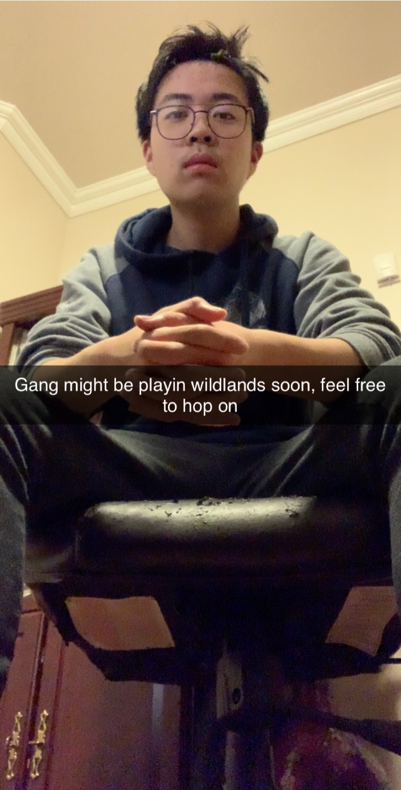this photo is sourced from my phone. Taken in my office at home.
Because my high school was based in Delta, I didn’t have many close friends that also lived in Richmond (All of the boys lived in other cities…) Due to this I spent most of my childhood chilling at home and brainlessly gaming away or reading. Which is crazy to think about since I was reading some pretty crazy shit back then. I think it was about halfway through Annihilation by Jeff VanderMeer, in like Grade 8. Now I barely read at all, and that is certainly something to ponder. When did I stop?

this photo is sourced from my friend's phone. Taken in my office at home.

this photo is sourced from my phone. Taken in my office at home.
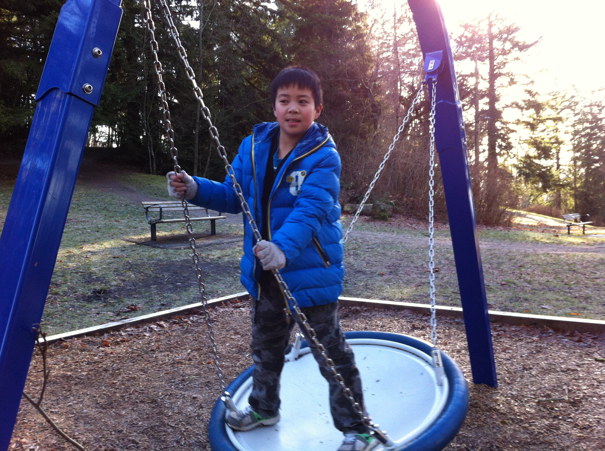this photo is sourced from my mum's phone. Taken in Stanley Park, I believe. (I could be wrong)

this photo is sourced from my mum's phone. Taken during my skating lessons.
A good way to describe Richmond would be to basically imagine Markham but smaller, and on an island. That is a pretty accurate representation to be honest. The now and there strip malls in Markham with storefronts that are 80% composed of Hanzi, at least 1 8-ball place, 1 claw machine place, and probably a shady reseller? Yeah that’s pretty much Richmond as well.
JUNNY. 21. Warner Music Korea, 2021.

this photo was sourced from my mum's phone. Taken on the playground near my elementary.
THE HOT LUNCHES HERE WERE GREATGarden City Elementary is where I attended Grades 1-4 until I transferred to my high school. It's a pretty average elementary school. I remember vividly that they spiced up the playground after I left though, from rotting blue and yellow paint to a sleek, modern, red and black finish, and a new monkey bar too. I was hella pissed about it, and rightfully so, rock on 10yr old Daniel.
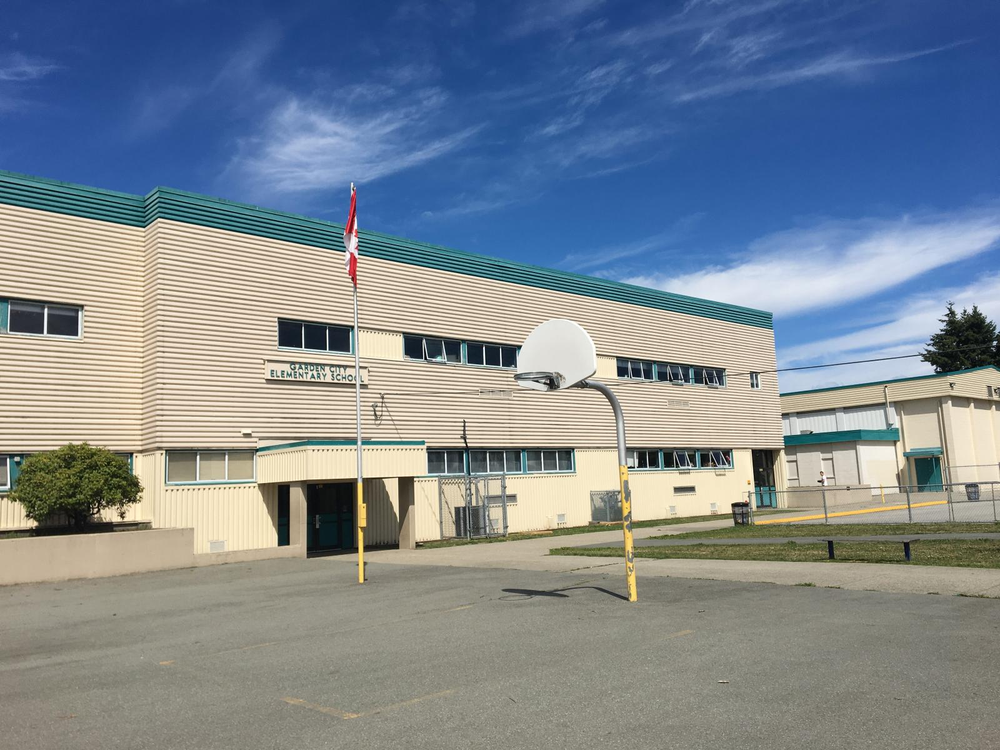this photo is sourced from Google. Taken outside of my elementary school.
Before this however, brings us to way more east than you’d think

this photo is sourced from Google. Taken outside of my elementary school, right after they got renovations.
Bieber, Justin, featuring Daniel Caesar and Giveon. "Peaches." Justice, Def Jam Recordings, 2021.
I think I ate lobster for the first time here. I did not like it. (at the time)
Prince Edward Island is the first Canadian soil I’ve ever set these two feet on. Not sure why we needed to go all the way east and then west first, maybe my parents were getting a taste of which coast was optimal for immigration (a bit too east mind you) but I vaguely recall them telling me that it was for something to do with the immigration process itself and they’ve already settled on Vancouver.
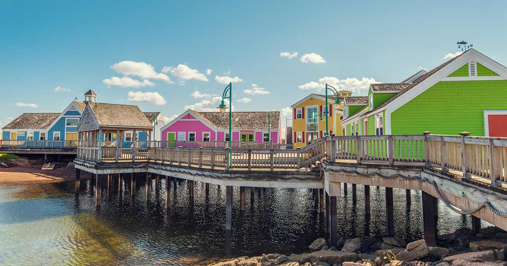this photo is sourced from Google. Taken near the PEI docks, where I ate Lobster.
Compared to another island I would say that PEI overall was pretty okay, not that I can remember much of it at all anyways.

this photo was sourced from my mum's phone. Taken somewhere in PEI.
Caesar, Daniel. "Always." Never Enough, Republic Records, 2023.
this photo is sourced from unsplash
taken by Jasper Wild
Speaking of another island, and I know that calling Australia an island is just wrong but I don’t care. Sydney, I believe, was the first vacation destination I’ve been to outside of China.
My parents took me on this trip because their company had a promotion or something, so I went with all of their co-workers too, not that I remember a single one of their faces or names for that matter.

this photo is sourced from unsplash
taken by Sam Wermut
this photo was sourced from my family's DSLR. Taken on the boat while I could still walk.
What I do remember is that my parents and I discovered that I CAN NOT take seasickness. They decided to take us on a trip on some small yacht or something and I spent the entire time just lying down in some bunk and dying inside. Shoutout to mum for staying beside me the whole time.
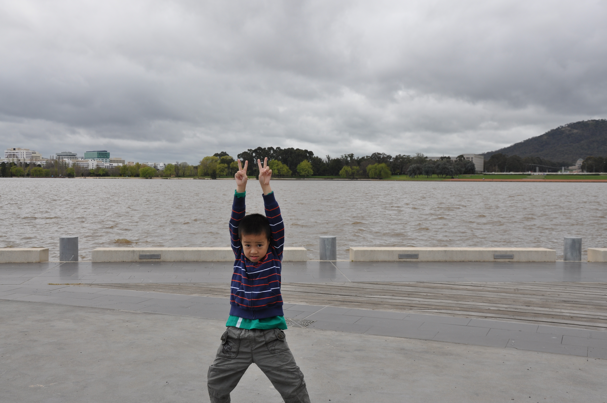this photo was sourced from either my family's DSLR or a phone. Taken god knows where, probably Sydney though.
Flume & Chet Faker. "Drop the Game." Lockjaw, Future Classic, 2013.

this photo is sourced from unsplash
taken by Hongwei Fan
this photo is sourced from unsplash
taken by Hongwei Fan
this photo was sourced from my family's DSLR. Taken in a park somewhere in --Guizhou.
THE FOOD IS BUSSIN I DARESAYI really like the street food they have here and I think this was one of the first places that I visited outside of my city since I was born.
I have family relatives here, and I remember vividly chilling at my cousin’s place and him introducing me to some “three kingdom” type fighting game and 2K. I was baffled bro, totally engrossed in that shit. I blame him for any crippling video addiction, also I blame my dad cause he introduced me to Plants vs Zombies that was also a core memory.
I remember in the summer you can just go onto the street and pull up to one of the many stalls outside and ask for something I believe was like lamb noodle soup? Not sure as to the specifics but with 5 RMB you could get a pretty nice and rather delicious bowl. I remember the plastic stools, and I remember how they would staple some sort of wrapping to their plastic tables too. Because chili oil would get everywhere and I remember the shopkeepers coming around and wiping down the tables and whatnot.

this photo is sourced from Google. Taken outside some shop and it looks absolutely magnificent

this photo is sourced from Google. Idk where it is taken but it looks delicious
I remember the fried tofu, which you would dip in some chili pepper powder and whatnot. I still remember the taste of the powder, and recently found them at T&T and I was actually ecstatic. I remember sitting around a circular grill with more plastic stools with my family in some random road-side area, with some more grills and seating around us. There weren’t many people there at the time.
DEN. "DEN - ILLUSION (Official Video)" YouTube, uploaded by DEN, www.youtube.com/watch?v=2JOkR9g01Xg.
It is hot as hell here in the summer since it's located in a valley, and all of the heat gets trapped in it. 40+ degree summers were literally the norm, if you weren’t in an A/C’ed room at least every 30 minutes you might be going to the hospital with a heat stroke, and it was so hot you can literally SEE the lines. You know how in movies in the desert or hot as hell scenes they have that cliche wavy effect? Imagine that but in real life, with stagnant winds, it feels suffocating bro.
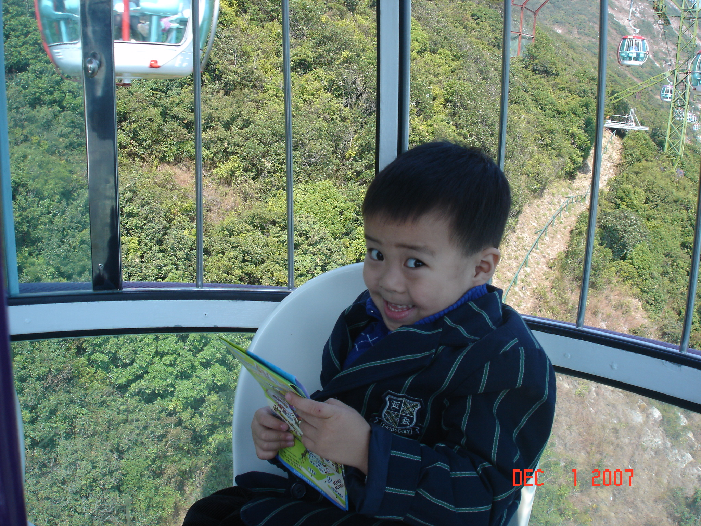this photo is sourced from my family DSLR. Taken in a lift somewhere, I was really excited about something.
Because of this I usually spent most of my time at home, watching bootleg cartoons and the non-bootlegs as well. Spending my time playing flash games, working on flash cards, prepping for the weekly quizzes, and amongst this various other things.
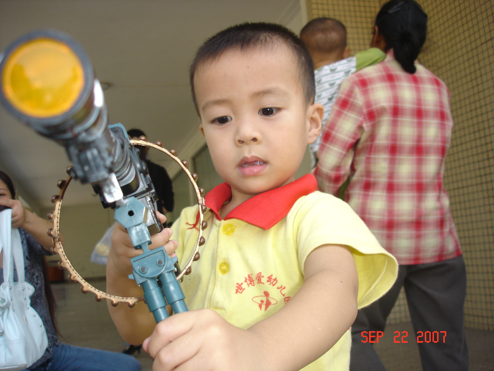this photo is sourced from my family DSLR. Taken probably at a relatives' home.
Jay Chou. "稻香 Rice Field - Official Music Video." YouTube, uploaded by Jay Chou, www.youtube.com/watch?v=sHD_z90ZKV0.
Since I was born I've lived beside the zoo. Apparently either Obama or Trudeau, or some other important figure came over and got a panda from the zoo, at least from what I can remember my parents telling me about it. Despite living literally minutes away from the zoo I barely went there, I only really remember going twice or thrice in the entirety of my life.
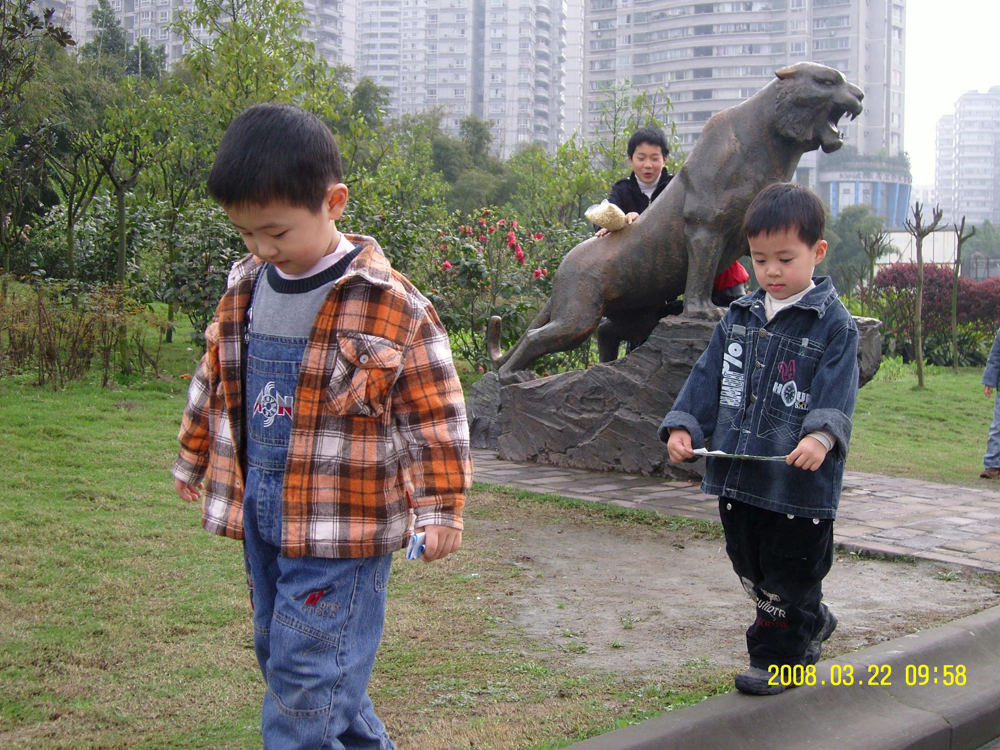this photo is sourced from my family DSLR. Taken at the Chongqing Zoo when I was chilling with my childhood friend.
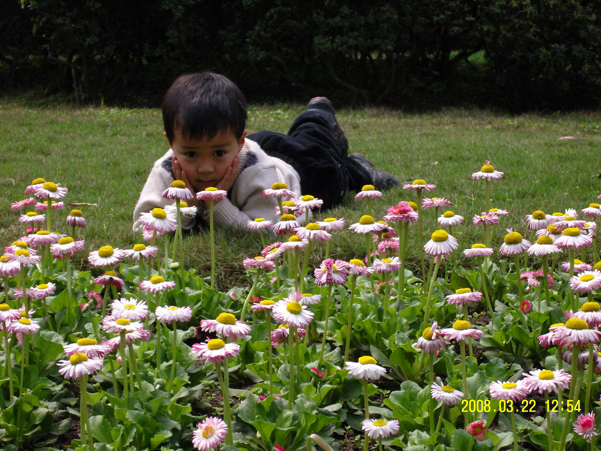this photo is sourced from my family DSLR. Taken at the Chongqing Zoo.
I remember there was like a 7D cinema or something in the zoo, a bit crazy if I have to say for such innovation to be just in a zoo, we're struggling with understanding a fourth dimension and the Chongqing Zoo engineers are already on the 7th one. Wow.
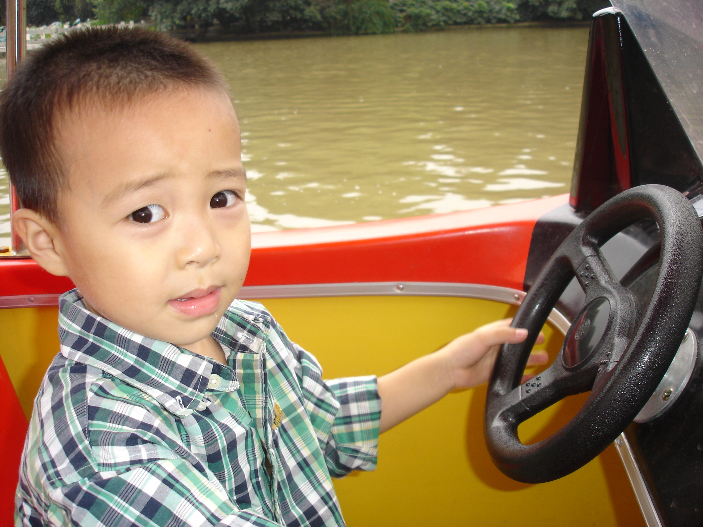this photo is sourced from my family DSLR. Taken somewhere in China, on a boat ride.
I spent most of my time either doing shenanigans and being a kid at home or in the residential neighborhood, since I lived in an apartment, which was also part of a larger group of apartments. I would usually reach the community center in the middle to play ball with literally random kids (none of which i remember) of the neighborhood with some elderly chilling beside either chewing on some sunflower seeds or playing mahjong or the pond/lake thing in front of my building to catch tadpoles and whatnot.

this photo is sourced from my family DSLR. Taken at some shop my relatives owned.
A core memory was when I got a good haul of tadpoles from the pond and decided to raise them into frogs in my little aquarium we had back at the condo. I woke up the next day to see that the goldfish had eaten all of the tadpoles. All of them.
Ma Di. "南山南." YouTube, by Ma Di, accessed 24 Feb. 2024, www.youtube.com/watch?v=0Abq0vkT190.
I think I was born in the afternoon, or at noon, somewhere around that time. Probably like 2pm ish or something. I gotta check in with my parents with that.
I remember my parents told me that they were freaking out because I had a fever or something when I was born for the first night and then they showered me a couple of times.

this photo is sourced from a professional. Taken at a photoshot for when I turned 100 days old.
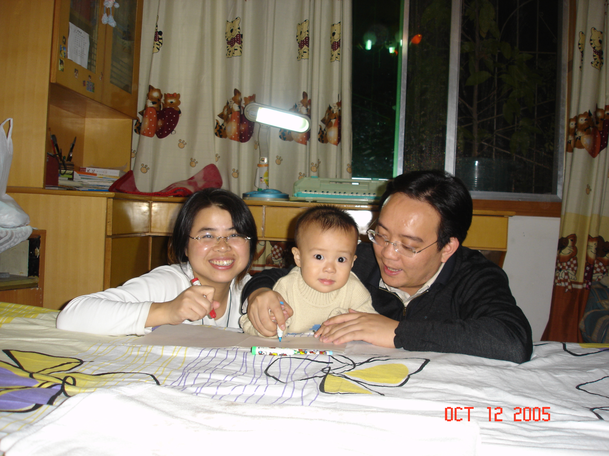this photo is sourced from my family DSLR. Taken somewhere I'm not sure of.
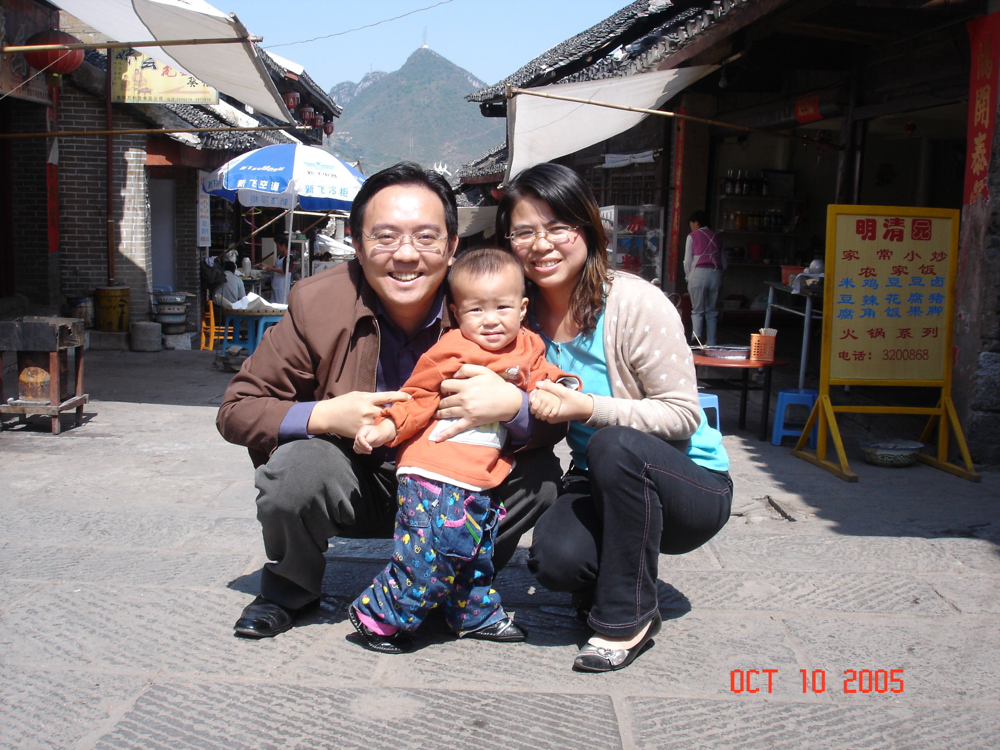this photo is sourced from my family DSLR. Taken somewhere I'm not sure of.
Turns out they forgot to turn the heating down lmao.
Now I’m here, 20 years old, a graphic designer, and another person in the world.
G.E.M. "后会无期 See You When I See You." YouTube, uploaded by G.E.M. 邓紫棋, accessed February 24, 2024, youtube.com/watch?v=vQmdOBt4F6Q.
I am currently 19 yrs old.
I am currently studying Graphic Design at OCADu in Toronto.
My courses this semester consist of: Graphic Design 2, Intro to Comp Sci and Coding Logic, History of New Media Arts, and Hybird Media Lab